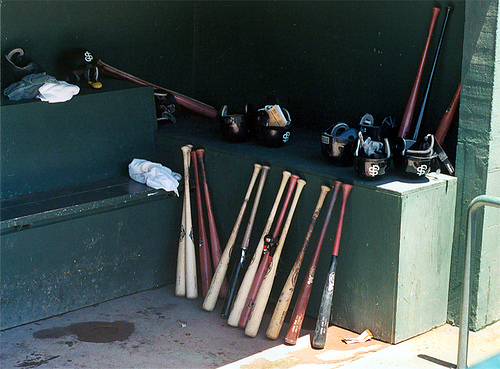
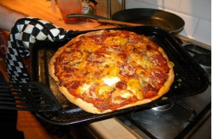
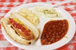
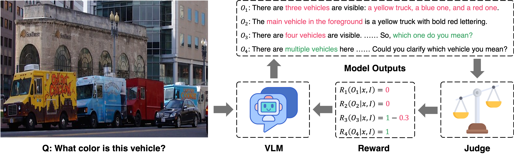
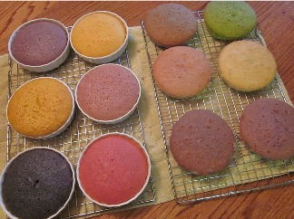
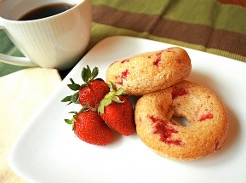
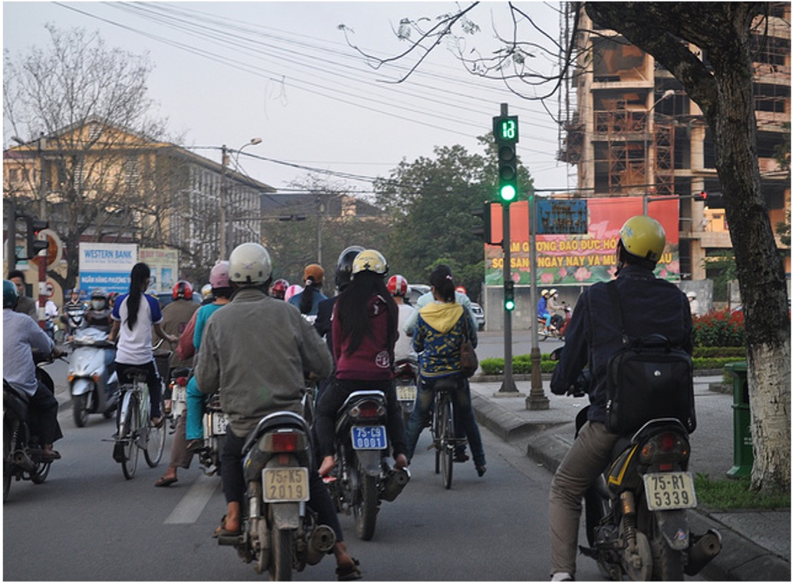

Visual Question Answering (VQA) is a core task for evaluating the capabilities of Vision-Language Models (VLMs). Existing VQA benchmarks primarily feature clear and unambiguous image-question pairs, whereas real-world scenarios often involve varying degrees of ambiguity that require nuanced reasoning and context-appropriate response strategies. Although recent studies have begun to address ambiguity in VQA, they lack (1) a systematic categorization of ambiguity levels and (2) datasets and models that support strategy-aware responses. In this paper, we introduce Ambiguous Visual Question Answering (AQuA), a fine-grained dataset that classifies ambiguous VQA instances into four levels according to the nature and degree of ambiguity, along with the optimal response strategy for each case. Our evaluation of diverse open-source and proprietary VLMs shows that most models fail to adapt their strategy to the ambiguity type, frequently producing overconfident answers rather than seeking clarification or acknowledging uncertainty. To address this challenge, we fine-tune VLMs on AQuA, enabling them to adaptively choose among multiple response strategies, such as directly answering, inferring intent from contextual cues, listing plausible alternatives, or requesting clarification. VLMs trained on AQuA achieve strategic response generation for ambiguous VQA, demonstrating the ability to recognize ambiguity, manage uncertainty, and respond with context-appropriate strategies, while outperforming both open-source and closed-source baselines.
"What color is this bat?" : asked in front of an image with many baseball bats, none visually salient.
In real-world conversations, humans don't always give a single definitive answer when faced with ambiguous questions. Humans infer when context provides enough clues, enumerate alternatives when there are only a few plausible options, or ask for clarification when the scene is genuinely unclear. Current VLMs, however, default to confidently picking one answer, even when that confidence is not warranted.

In this image, none of the bats is visually salient, making the visual context ambiguous.
"There are several baseball bats visible, so "this" could refer to more than one bat. Could you specify which bat you mean perhaps by ......"
Recognizes the ambiguity and asks for clarification.
"The bat in the foreground (leaning against the wall, farthest to the right) is black with a red handle."
"Based on the image, the bats in the foreground are a variety of colors, including natural wood, ......"
"The bat in the image is red and black."
Arbitrarily selects one bat — ignores ambiguity entirely.
While GPT, Gemini, and Qwen provide answers by arbitrarily selecting (e.g., the bat in the foreground) despite the ambiguity,
our model, which is trained to handle such cases strategically, requests clarification instead.
AQuA systematically categorizes ambiguous VQA into four fine-grained levels, each aligned with a distinct response strategy.
Clear, standard VQA cases with a unique, unambiguous answer. The target object is explicitly specified without vague referential terms.

Questions use pronouns like "this" or "it," but a single salient object makes the referent obvious. The model should resolve and answer from context .

2–3 plausible referents exist. Rather than guessing, the model should describe each possibility, making enumeration more efficient than clarification.
Many equally plausible referents exist and enumeration would be impractical. The model must politely ask for clarification and explain why.
We fine-tune Qwen2.5-VL-3B-Instruct and InternVL3-2B-Instruct on AQuA using a two-stage pipeline.
Why two stages? SFT alone does not reliably select the right strategy under different levels of ambiguity. GRPO provides explicit rewards for strategy-aware outputs, improving contextually appropriate decision-making.

Reward assignment process in GPRO.
Strategic Accuracy (%) on AQuA test split. Models fine-tuned on AQuA substantially outperform all baselines, including GPT-5 and Gemini 2.5 Flash.
| Model | Level 0 | Level 1 | Level 2 | Level 3 | Overall |
|---|---|---|---|---|---|
| Zero-Shot | |||||
| Qwen2.5-VL-3B-Instruct | 97.11 | 0.11 | 33.33 | 0.78 | 32.83 |
| Qwen2.5-VL-72B-Instruct | 99.56 | 0.56 | 2.11 | 0.89 | 25.78 |
| InternVL3-2B-Instruct | 96.0 | 2.33 | 3.56 | 1.89 | 25.95 |
| InternVL3-78B-Instruct | 96.0 | 2.11 | 3.0 | 5.67 | 26.7 |
| GPT-5 | 89.67 | 0.67 | 0.33 | 0.78 | 22.86 |
| Gemini 2.5 Flash | 99.00 | 5.22 | 4.44 | 0.89 | 27.39 |
| Strategy Prompting | |||||
| Qwen2.5-VL-72B-Instruct | 99.78 | 5.89 | 17.11 | 46.11 | 42.22 |
| GPT-5 | 94.56 | 59.0 | 10.67 | 4.78 | 42.25 |
| Gemini 2.5 Flash | 99.11 | 8.0 | 10.68 | 30.11 | 36.98 |
| AQuA Tuned Models | |||||
| Qwen2.5-VL-3B-Tuned | 99.56 | 77.0 | 82.22 | 86.33 | 86.28 |
| InternVL3-2B-Tuned | 98.78 | 80.0 | 59.67 | 78.0 | 79.11 |
Our models outperform GPT-5 and Gemini 2.5 Flash on overall strategic accuracy.
Comparison between zero-shot baseline and our AQuA-tuned model across different ambiguity levels.



@inproceedings{jang2026aqua,
title={{AQ}uA: Toward Strategic Response Generation for Ambiguous Visual Questions},
author={Jihyoung Jang and Hyounghun Kim},
booktitle={The Fourteenth International Conference on Learning Representations},
year={2026},
url={https://openreview.net/forum?id=7b1MpD6IF8}
}